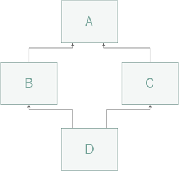

super()¶
Par Anthony Fleury 1
Introduction¶
Python est un langage orienté objet et permet donc de gérer des objets via la
mécanique des classes. Qui dit classes dit héritage et c’est en partie ce qui va
nous intéresser dans ce chapitre, car c’est cette notion nous mène à l’utilisation
du mot-clé super().
Comme dans d’autres langages de haut niveau, super() nous permet d’interagir avec la
classe parente depuis une spécialisation de celle-ci.
Classes et héritage simple¶
Voici tout d’abord comment créer une classe basique et la spécialiser sans l’utilisation du mot-clé super().
1 2 3 4 5 6 7 8 9 10 11 12 13 14 15 16 17 | class Personne:
def __init__(self, prenom, nom):
self.prenom = prenom
self.nom = nom
def __str__(self):
return f"{self.nom} {self.prenom}"
class Etudiant(Personne):
def __init__(self, prenom, nom, domaine):
Personne.__init__(self, prenom, nom)
self.domaine = domaine
def __str__(self):
parent = Personne.__str__(self)
return f"{parent}, {self.domaine}"
|
Dans cet exemple, nous créons une première classe Personne avec deux attributs (prenom et nom)
ainsi qu’une méthode de conversion en string retournant une chaine. La seconde classe nommée Etudiant
hérite de Personne et dispose d’un attribut supplémentaire domaine. Cette dernière redéfinit la
méthode __str__ afin d’y intégrer son nouvel attribut.
Remarquez l’utilisation directe du nom de la classe parente Personne dans les deux méthodes de la classe Etudiant.
Voici maintenant cette même classe en faisant usage de super().
1 2 3 4 5 6 7 8 | class Etudiant(Personne):
def __init__(self, prenom, nom, domaine):
super().__init__(prenom, nom)
self.domaine = domaine
def __str__(self):
parent = super().__str__()
return f"{parent}, {self.domaine}"
|
Dans ce cas, l’appel de la classe parente a tout simplement été remplacé par super().
L’utilisation de super() a été faite sans arguments, ceci n’est possible que depuis Python3.
Il aurait également été possible d’écrire super(Etudiant, self).__init__(prenom, nom)
mais pourquoir se compliquer la vie.
Héritage multiple¶
Tout comme C++, et contrairement à Java ou C#, Python est capable d’utiliser l’héritage multiple.
Ceci implique forcément des particularités au niveau de l’utilisation de cette mécanique qui
peuvent être gérées à l’aide de super().
1 2 | class SousClasse(Classe1, Classe2, Classe3, ...):
"""Classe héritant de plusieurs classes."""
|
Diamond Problem¶
Le Diamond Problem est un terme généralement utilisé pour représenter les ambiguïtés survenant lorsque deux classes B et C héritent d’une superclasse A et qu’une quatrième classe D hérite à la fois de B et C.
Si A implémente une certaine méthode qui est elle-même redéfinie dans les classes B et/ou C, quelle version de cette méthode sera héritée par la classe D ?
Voici un exemple de code illustrant cette fameuse situation :
1 2 3 4 5 6 7 8 9 10 11 12 13 14 15 16 17 18 19 20 21 22 23 | class A:
def test(self):
print("Appel de test depuis A")
class B(A):
def test(self):
print("Appel de test depuis B")
class C(A):
def test(self):
print("Appel de test depuis C")
class D(B, C):
pass
nouveauD = D()
nouveauD.test()
# Sortie : Appel de test depuis B
|
La réponse dépend de l’ordre dans lequel les classes parentes sont spécifiées lors de l’héritage.
En effet, si B est placée avant C, ce sera alors sa méthode qui est appelée par une instance de D.
N.B. Les résultats obtenus peuvent varier selon la version de Python utilisée, mais ils seront tels qu’indiqués si Python3 est utilisé.
Utilité de super lors de l’héritage multiple¶
Dans ce premier exemple nous allons retrouver nos quatre classes A, B, C et D avec les mêmes
héritages que dans la section précédente (diamond problem). Nous allons observer les différences avec et sans usage
de la méthode super().
1 2 3 4 5 6 7 8 9 10 11 12 13 14 15 16 17 18 19 20 21 22 23 24 25 26 27 28 29 30 31 32 33 | class A:
def test(self):
print("Appel de test depuis A")
class B(A):
def test(self):
print("Appel de test depuis B")
A.test(self)
class C(A):
def test(self):
print("Appel de test depuis C")
A.test(self)
class D(B, C):
def test(self):
print("Appel de test depuis D")
B.test(self)
C.test(self)
nouveauD = D()
nouveauD.test()
# Sortie :
# Appel de test depuis D
# Appel de test depuis B
# Appel de test depuis A
# Appel de test depuis C
# Appel de test depuis A
|
Nous remarquons alors que la méthode test de la classe A est appelée deux fois. Une première fois en remontant depuis B et une seconde fois depuis C. Ce comportement n’est pas donc pas idéal, car même si D hérite à la fois de B et C, la méthode de la classe A ne devrait être appelée qu’une seule et unique fois.
1 2 3 4 5 6 7 8 9 10 11 12 13 14 15 16 17 18 19 20 21 22 23 24 25 26 27 28 29 30 31 | class A:
def test(self):
print("Appel de test depuis A")
class B(A):
def test(self):
print("Appel de test depuis B")
super().test()
class C(A):
def test(self):
print("Appel de test depuis C")
super().test()
class D(B, C):
def test(self):
print("Appel de test depuis D")
super().test()
nouveauD = D()
nouveauD.test()
# Sortie :
# Appel de test depuis D
# Appel de test depuis B
# Appel de test depuis C
# Appel de test depuis A
|
Cette fois-ci, le comportement observé est celui que nous désirons, mais pourquoi ?
La méthode super() va utiliser l’algorithme MRO afin de déterminer l’ordre
d’appel le plus adéquat avec le schéma de classe choisi. Ainsi chaque classe aura une sorte de « chemin » jusqu’à son
parent le plus vieux et c’est ce chemin qui permet d’effectuer les bons appels de méthodes. Il est bon de
constater que l’ordre d’héritage passé à D est toujours pris en compte.
Remarquez aussi que nous n’avons également plus besoin de passer self lors de l’appel de la méthode, car super()
représente directement les objets parents.
Constructeurs avec super et fonctionnement de MRO¶
Cette fois-ci, la méthode implémentée est le constructeur de ces mêmes classes. Comme dans les autres langages, il est nécessaire de faire appel au constructeur du parent dans celui de l’enfant.
1 2 3 4 5 6 7 8 9 10 11 12 13 14 15 16 17 18 19 20 21 22 23 24 25 26 27 28 29 30 | class A:
def __init__(self):
print("Constructeur de A")
class B(A):
def __init__(self):
print("Constructeur de B")
super().__init__()
class C(A):
def __init__(self):
print("Constructeur de C")
super().__init__()
class D(B, C):
def __init__(self):
print("Constructeur de D")
super().__init__()
nouveauD = D()
# Sortie :
# Constructeur de D
# Constructeur de B
# Constructeur de C
# Constructeur de A
|
Le fonctionnement reste équivalent à celui observé auparavant.
Afin de mieux comprendre le fonctionnement super(), il est possible d’afficher le fameux chemin déterminé par MRO :
>>> D.__mro__
[<class 'super_init.D'>,
<class 'super_init.B'>,
<class 'super_init.C'>,
<class 'super_init.A'>,
<class 'object'>]
>>> B.__mro__
[<class 'super_init.B'>,
<class 'super_init.A'>,
<class 'object'>]
>>> C.__mro__
[<class 'super_init.C'>,
<class 'super_init.A'>,
<class 'object'>]
>>> A.__mro__
[<class 'super_init.A'>,
<class 'object'>]
Points importants¶
Afin que
super()fonctionne correctement en cas d’héritage multiple, il est nécessaire d’y faire appel dans tous les constructeurs de l’arborescence. Sauf éventuellement pour la classe de base (la plus haute), car héritant obligatoirement deobject, cet appel n’aurait pas d’effet.L’utilisation d’arguments différents pour les méthodes surchargées peut poser problème. Dans le cas d’une utilisation conjointe avec le mot-clé
super(), il faudra utiliser une astuce : les méthodes appelées parsuper()se transmettent leurs arguments à l’aide de tableaux. Ainsi toutes les versions de la méthode ont la même signature.
Exemple d’utilisation avec des arguments :
1 2 3 4 5 6 7 8 9 10 11 12 13 14 15 16 17 18 19 | class First:
def __init__(self, *args, **kwargs):
self.first_arg = kwargs.pop('first_arg')
super().__init__(*args, **kwargs)
class Second(First):
def __init__(self, *args, **kwargs):
self.second_arg = kwargs.pop('second_arg')
super().__init__(*args, **kwargs)
class Third(Second):
def __init__(self, *args, **kwargs):
self.third_arg = kwargs.pop('third_arg')
super().__init__(*args, **kwargs)
third = Third(first_arg=1, second_arg=2, third_arg=3)
|
On utilise kwargs afin de récupérer les arguments aux bons endroits à l’aide de leur nom.
Conclusion¶
super() est un outil puissant permettant d’accéder aux parents directs lors d’héritage et de
régler différents problèmes dus à l’héritage multiple.
super() reste toutefois complexe à maitriser, car son fonctionnement n’est pas toujours intuitif et évident.
Les exemples abordés dans cette documentation ne touchent que la partie visible de l’iceberg, car les choses peuvent vite devenir compliquées lorsqu’on utilise des arguments différents et des schémas de classe complexes.
Pour aller plus loin: Python’s super() considered super!